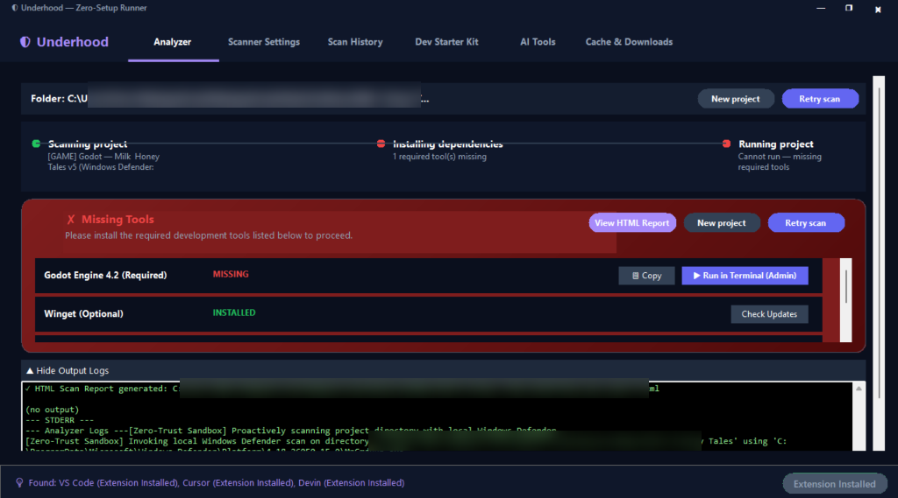
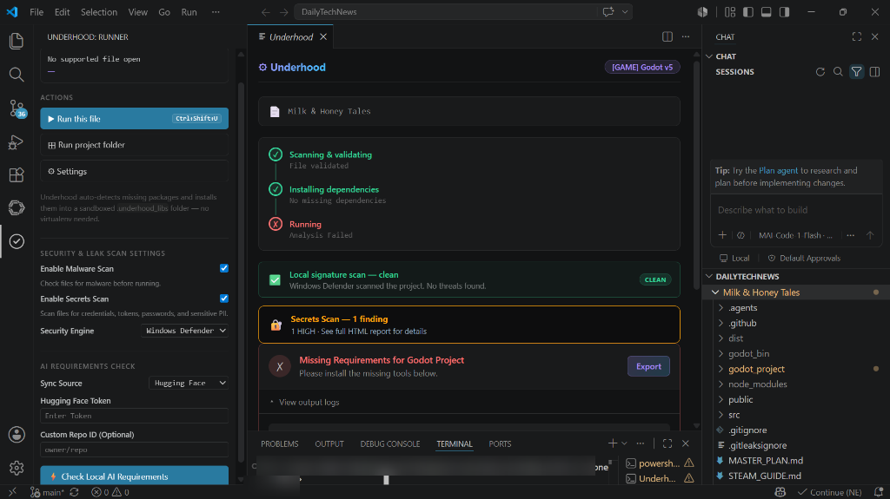

Underhood auto-detects runtime environments (Python, Node, Lua), auto-installs missing dependencies, and runs code in a secured malware-scanned sandbox with credentials audit.
Real-time dependency resolution, malware checking, and leak scanning
passwd: 123***REDACTED***Complete environment diagnostics and sandboxed execution dashboard

Inline malware detection, dependency resolution, and leak alerts

Run untrusted code safely without wasting time on virtual environments
Integrates Windows Defender or VirusTotal to check script files recursively before local execution starts.
Robust class-based scanning engine spots leaked AWS credentials, Git Tokens, passwords, and PII in code/config files.
Detects required imports, pulls them automatically into a sandboxed folder, and bypasses local virtualenvs completely.
Isolates project runtimes completely from the host filesystem in a secure, containerized sandbox.
Every missing dependency round-trip costs you thousands of context tokens. Underhood collapses the whole loop into one shot.
A simple 3-step security audit workflow for your projects
Download the standalone **Windows WinForms Desktop app** for global environment diagnostics, or install the **VS Code Extension** to run checks directly from your editor.
Open settings to enable your desired scan depth. Turn on **Malware Scan** (Windows Defender signature verification) and **Secrets & Leaks Scan** to check for passwords, keys, and personal information.
Point Underhood to your project. The engine automatically checks for dependency leaks, runs a malware scan in a secured sandbox, and flags any secret leaks before execution.
Select the format that fits your development workflow best
Full WinForms graphical controller with sidebar tray, scan history logs, and sandbox settings.
Download MSI InstallerRun and audit scripts inline in your editor. Fully supports Cursor, Windsurf, and VS Code via direct VSIX extension installation.
Download VSIX Extension